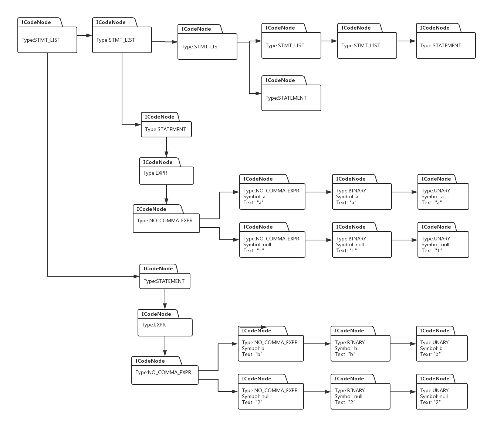
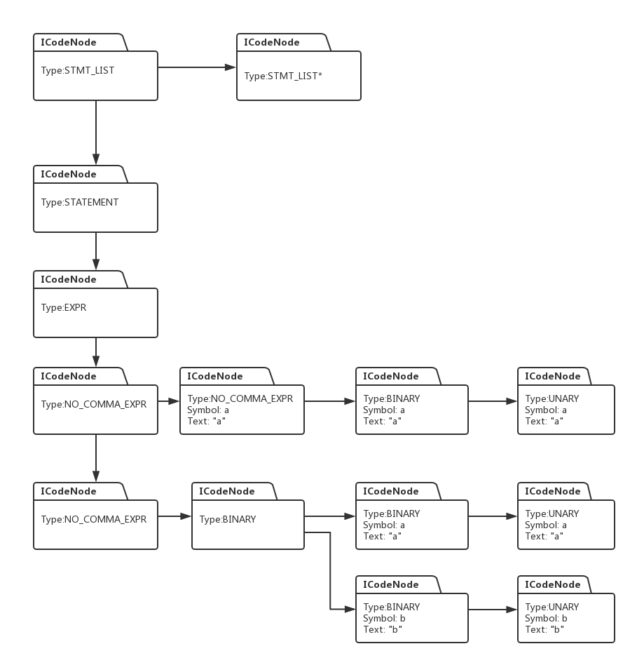

具体的代码演示和讲解请参数视频：
用java开发编译器
前一节，我们建立起了代码执行树，本节，我们看看，如何根据执行树直接执行C语言代码，以下是上一节我们构建的执行树：


这些执行树，本质上是图论里面的有向图，我们执行代码的过程，实际上是根据有向图进行深度优先遍历的过程，我们先遍历到底层节点，根据底层节点的信息执行相应动作，然后把执行的结果传递给上一层节点，然后再根据传递上来的信息做相应的操作，以此类推，知道返回到根节点时，执行结束。
我们先看看与解释器相关的代码实现：
public interface Executor {
public Object Execute(ICodeNode root);
}Executor 是一个接口，执行树中每个节点都对应相应类型的Executor,每个具体类型的Executor都实现Execute接口，例如类型为NO_COMMA_EXPR类型的节点就会对应一个NoCommaExprExecutor类。在上面接口的基础上，我们先实现一个解释器的基类叫BaseExecutor:
package backend;
import java.util.Collections;
public abstract class BaseExecutor implements Executor{
protected void executeChildren(ICodeNode root) {
ExecutorFactory factory = ExecutorFactory.getExecutorFactory();
Collections.reverse(root.getChildren());
int i = 0;
while (i < root.getChildren().size()) {
ICodeNode child = root.getChildren().get(i);
Executor executor = factory.getExecutor(child);
executor.Execute(child);
i++;
}
}
protected void copyChild(ICodeNode root, ICodeNode child) {
root.setAttribute(ICodeKey.SYMBOL, child.getAttribute(ICodeKey.SYMBOL));
root.setAttribute(ICodeKey.VALUE, child.getAttribute(ICodeKey.VALUE));
root.setAttribute(ICodeKey.TEXT, child.getAttribute(ICodeKey.TEXT));
}
}
BaseExecutor 实现两个调用，一个是executeChildren, 这个接口的作用是，当我们遍历到执行树上的某个节点时，要根据该节点进行相应的代码执行操作，在此之前，如果该节点有孩子的话，我们需要先执行他的孩子，它收到所以孩子的执行结果后，再根据这些结果进行相应的操作。while循环里就是从孩子队列里取出每个孩子对象，然后从Executor的工厂类中获得对应的执行对象去进行相应的执行动作。
copyChild的目的是，把孩子节点的所有相关信息拷贝到父节点。
接下来我们看看Executor的工厂类：
package backend;
import frontend.CTokenType;
public class ExecutorFactory {
private static ExecutorFactory executorFactory = null;
private ExecutorFactory() {
}
public static ExecutorFactory getExecutorFactory() {
if (executorFactory == null) {
executorFactory = new ExecutorFactory();
}
return executorFactory;
}
public Executor getExecutor(ICodeNode node) {
CTokenType type = (CTokenType)node.getAttribute(ICodeKey.TokenType);
switch (type) {
case UNARY:
return new UnaryNodeExecutor();
case BINARY:
return new BinaryExecutor();
case NO_COMMA_EXPR:
return new NoCommaExprExecutor();
case EXPR:
return new ExprExecutor();
case STATEMENT:
return new StatementExecutor();
case STMT_LIST:
return new StatementListExecutor();
}
return null;
}
}
通过getExecutor 可以看到，工程类会根据传入的节点类型生成对应的执行对象，当前节点类型有几种，我们就可以生成几种不同类型的节点执行器。我们先看看某个具体节点执行器的实现，例如BinaryExecutor:
package backend;
import java.util.Collections;
import frontend.CGrammarInitializer;
import frontend.Symbol;
public class BinaryExecutor extends BaseExecutor{
@Override
public Object Execute(ICodeNode root) {
executeChildren(root);
ICodeNode child;
int production = (int)root.getAttribute(ICodeKey.PRODUCTION);
switch (production) {
case CGrammarInitializer.Uanry_TO_Binary:
child = root.getChildren().get(0);
copyChild(root, child);
break;
case CGrammarInitializer.Binary_Plus_Binary_TO_Binary:
Collections.reverse(root.getChildren());
//先假设是整形数相加
int val1 = (Integer)root.getChildren().get(0).getAttribute(ICodeKey.VALUE);
int val2 = (Integer)root.getChildren().get(1).getAttribute(ICodeKey.VALUE);
root.setAttribute(ICodeKey.VALUE, val1 + val2);
System.out.println("Assign sum of " + root.getChildren().get(0).getAttribute(ICodeKey.TEXT) + " and "
+ root.getChildren().get(1).getAttribute(ICodeKey.TEXT) + " to variable " + root.getAttribute(ICodeKey.TEXT));
break;
}
return root;
}
}
在Execute函数中，先调用execueChildren对所以孩子节点进行执行操作，然后根据执行节点所对应的表达式进行相应的操作，例如，如果当前Binary节点对应的表达式是:
BINARY -> BINARY + BINARY
那么，我们知道，当前要执行的就是加法操作，于是执行器从当前节点的两个子节点中，获得要做加法操作的两个加数，把它们相加后的结果存入当前节点，这样，当前节点的父节点就可以拿到当前节点的执行结果，以便进行相应的执行操作。
其他执行器的逻辑类似，具体请参看视频演示，下面我们看看语句：
a = a + b;
是如何被执行的。
1： 从第二个图开始，执行树的根节点是STMT_LIST, 然后一直往下遍历，直到倒数第二个节点：NO_COMMA_EXPR.
2: NO_COMMA_EXPR 有两个子节点，于是先执行这两个子节点，因此先往下走，遍历到最下方的NO_COMMA_EXPR节点。
3：当前节点有一个孩子节点，BINARY, 于是向右走，遍历到子节点BINARY.
4: 当前BINARY有两个子节点，因此可以先往右走，一直遍历到最底层节点UNARY.
5: UNARY是最底层节点，因此可以直接执行，执行的过程是，根据UNARY节点的SYMBOL对象，获得变量a对应的数值，把该数值存储到节点里，然后返回到父节点BINARY。
6： 在父节点BINARY中，根据前面显示的代码，该节点要做的只是把子节点所有信息拷贝过来，当然也就把变量a的值以及对应的Symbol也拷贝过来，然后再返回父节点，也是BINARY节点。
7：当前BINARY节点还有一个子节点，对应的是变量b,因此继续遍历第二个子节点，执行过程跟步骤4，5，6一样，这样当前BINARY节点的两个子节点就分别含有变量a 和 b 对应的数值，根据前面代码，BINARY对应的执行器会把两个子节点的数值相加，然后存储到当前节点。
8：然后继续返回到父节点NO_COMMA_EXPR, 该节点执行是所做的操作就是把子节点的值拷贝过来，于是当前节点就包含了a + b的结果，然后继续返回到父节点NO_COMMA_EXPR.
9: 此时节点NO_COMMA_EXPR 正右边还有一个子节点，于是执行该子节点，该子节点执行后的作用是得到变量a对应的Symbol对象。
10：由于所有子节点都执行完毕，当前节点NO_COMMA_EXPR可以执行相应操作，它做的动作是将下方子节点NO_COMMA_EXPR的数值赋值到右边节点所得到的Symbol对象里，也就是把 a+b的值设置到变量a所对应的Symbol对象中，这样，语句a = a + b; 就执行结束了。
具体的代码演示和讲解请参数视频：
用java开发编译器